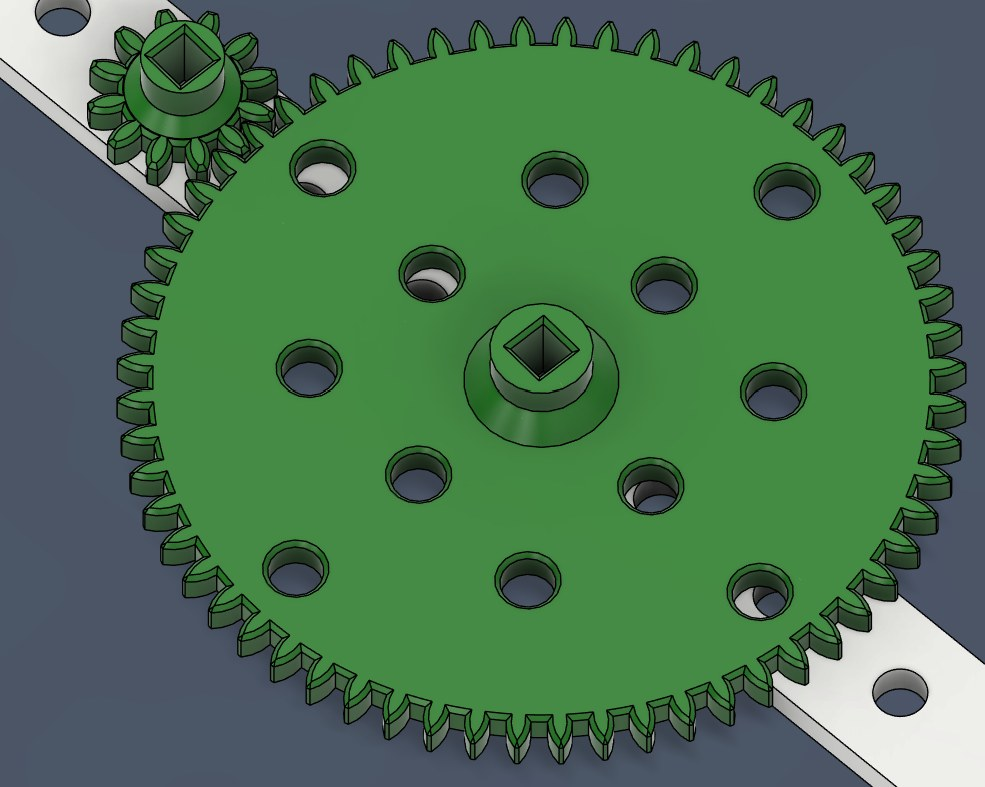
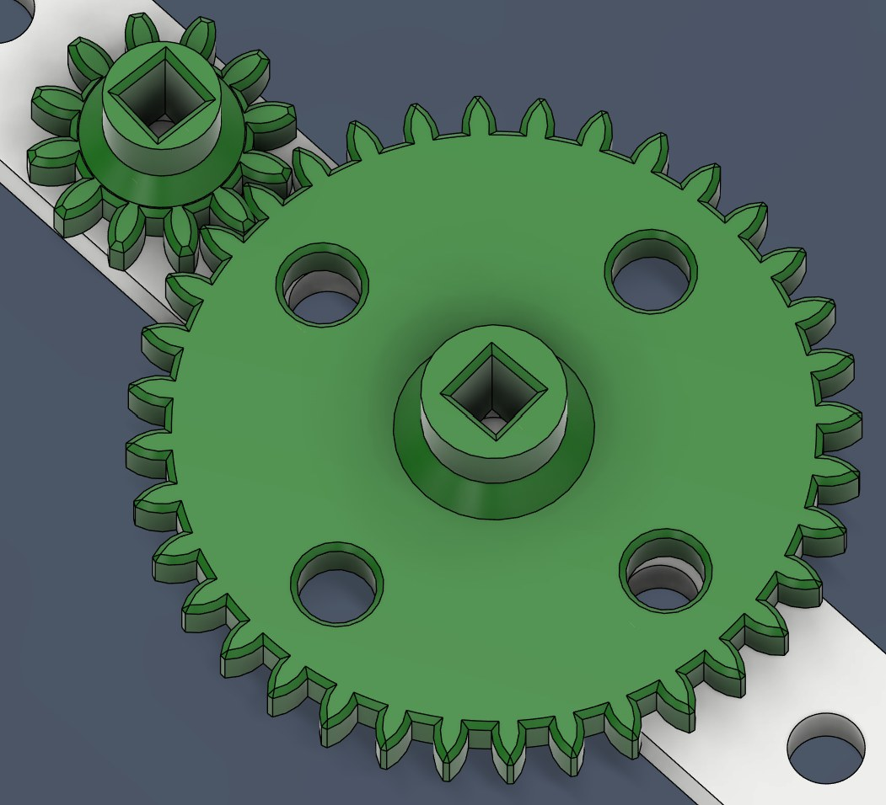
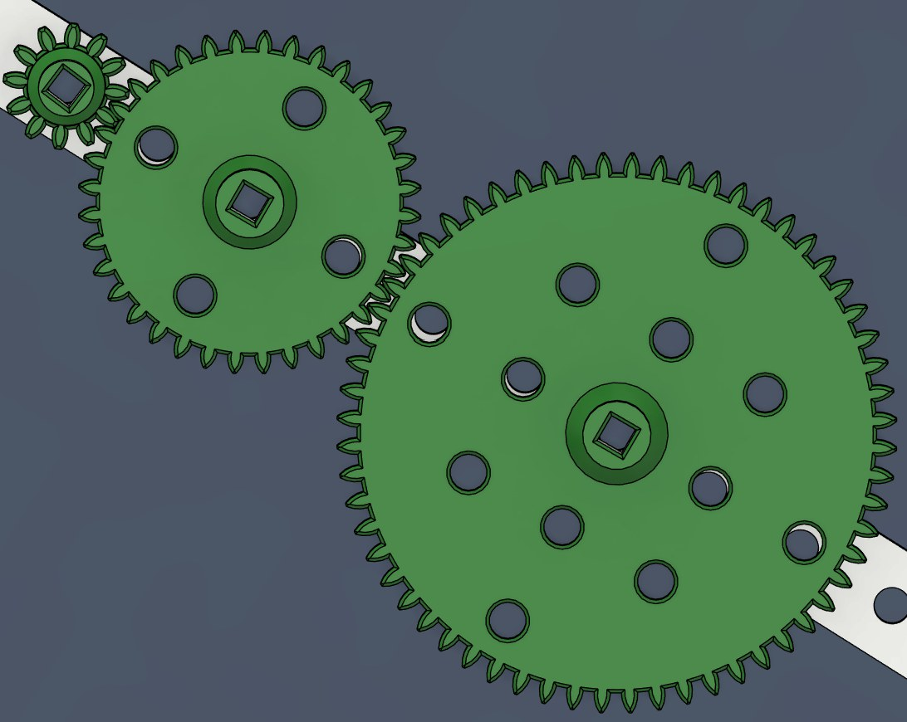
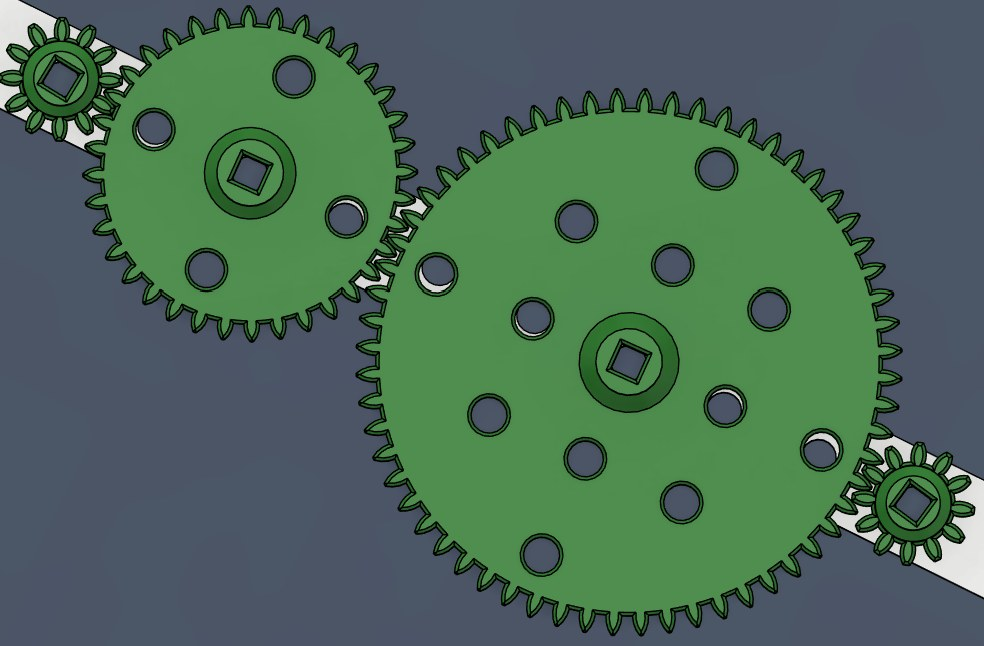
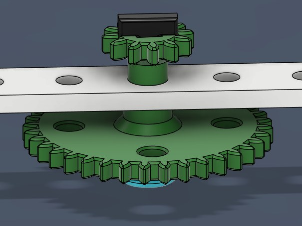
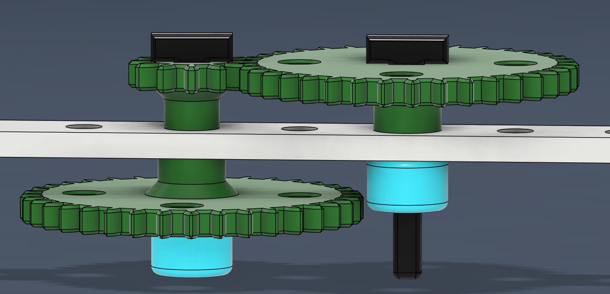
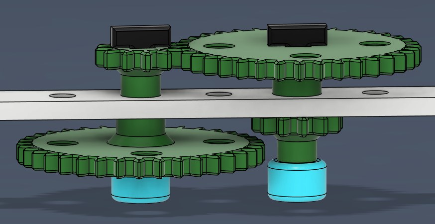
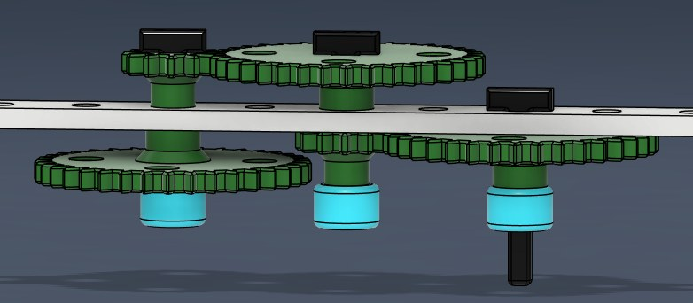

Idler gears, compound gears, and why engineers chain many gears together.
Build a gear train on your MechRail with a small gear and a large gear.
When you turn one gear clockwise, which way does the other gear turn?
The large gear has 60 teeth and the small gear has 12 teeth. If you turn the large gear once, how many times does the small gear turn?

Now build a gear train with a small gear and a medium gear.
When you turn one gear clockwise, which way does the other gear turn?
The medium gear has 36 teeth and the small gear has 12 teeth. If you turn the medium gear once, how many times does the small gear turn?

Add a large gear to your gear train so that it meshes with the medium gear.
If you rotate the large gear clockwise, what direction does the medium gear turn? What direction does the small gear turn?
The large gear has 60 teeth and the medium gear has 36. If you rotate the large gear once, how many times does the medium gear rotate?

Follow the motion one mesh at a time, starting from the large gear.
Think back to Build 1, when the large gear was connected directly to the small gear. If the large gear rotated once, how many times did the small gear rotate?
If we were building a device with this gear train, what purpose would the middle gear serve? Why would we include it?
Add a small gear that meshes with the large gear, so there is a small gear at each end of the train.
If you rotate the new small gear once clockwise, how many times does the other small gear rotate? What direction does it rotate?

Let’s try something a little different. Place a small gear and a medium gear on the same shaft, on opposite sides of the MechRail.
Make sure the standoff (non-toothed) side of each gear points toward the MechRail.
If you rotate the medium gear once, how many times does the small gear rotate?

Add another medium gear on a new shaft so that it meshes with the small gear.
Try rotating one of the medium gears. Does the other one rotate at the same speed?
Now rotate the other medium gear instead. Which one drives the other the fastest?

Add another small gear to the same shaft as the medium gear you just added, on the other side of the MechRail.
Make sure it does not mesh with the medium gear on the other shaft, and check that everything still spins freely.

Add one last medium gear on a third shaft so that it meshes with the small gear you just added. You now have quite the gear train.
Spin the medium gear you just added. Does the medium gear at the other end spin at the same speed?
Earlier, a gear between two other gears didn’t change the speed. It only changed the direction of rotation. Why is that not the case now?

Use masking tape to mark the medium gears so we can count rotations. We’ll call the gears A through E, starting from gear A, the medium gear you added last.
A little more formally, each pair of meshing gears is a stage, and the total ratio is the product of the stage ratios.
With a total ratio of 1:9, gear E spins 9 times faster than gear A, but with 1/9 of the torque.
Now make gear E the driver.
If E spins at 270 RPM, how fast will gear A rotate?
If E drives with a torque of 3 ft‑lbs, what is the output torque at gear A?
Work it out with a partner before we look at the solution.
With E as the driver, every stage is flipped: small gears now drive medium gears.
Running the train backward makes gear A turn 9 times slower than E, with 9 times the torque.
We now have several different types of gears, and we need names for them so we can discuss them.
The driver gear provides power to the system.
A driven gear gets its power from another gear.
If a gear sits between a driver gear and a driven gear, it is called an idler gear. To idle means to not do productive work.
Why do you think it would be called an idler gear?
The idler gear idles between the driver and the driven gear. It keeps the spacing right and it reverses direction, but it doesn’t affect the ratio.
So while it is turning and moving, it isn’t adding power or changing the mechanical advantage. It’s just along for the ride, passing the motion through.
A compound gear is two or more gears rigidly fixed together so that they rotate together at the same speed.
In your build, the small gear and the medium gear sharing one shaft form a compound gear.
A simple gear train is made of multiple gears where each shaft carries only one gear.
The total ratio is just driven gear teeth : driver gear teeth. The gears in between are idlers.
A compound gear train includes at least one shaft that carries multiple gears that rotate together.
The gear ratio is multiplied across each stage.
With the gear trains you built, when you reverse direction with the driver gear, do the other gears instantly start turning the other way? Or is there a tiny delay, a little wiggle first?
Try it out.
Backlash is the small gap between gear teeth that allows them to turn freely without binding.
It’s the little play, or slop, you feel when gears change direction. When the driver reverses, its teeth have to cross the gap before they push the driven gear the other way.
Gears need a little space between their teeth. If the teeth fit too tightly, friction and heat would lock them up.
That little space makes room for oil to lubricate the system, and it makes up for small errors from manufacturing.
Too much backlash can make motion inaccurate, especially in systems that reverse direction often, like robots, 3D printers, and other CNC machines.
Why do you think engineers often use many small gears instead of just two large ones?
Big gears need wide diameters to reach high ratios, which takes up too much space. Several small stages fit the same ratio into a compact area.
Each stage multiplies the effect of the last. A 4:1 stage and a 3:1 stage give a 12:1 total without one massive gear.
Each stage changes the speed gradually instead of all at once, which helps reduce shock, vibration, and slipping.
Small gears are easier and cheaper to make. Large gears need more material, tooling, and precision.
Smaller gears can mesh more precisely. Spreading the load over several gears reduces wear on individual teeth.
Engineers can swap one stage to adjust the speed without rebuilding everything, which makes fine-tuning easy.